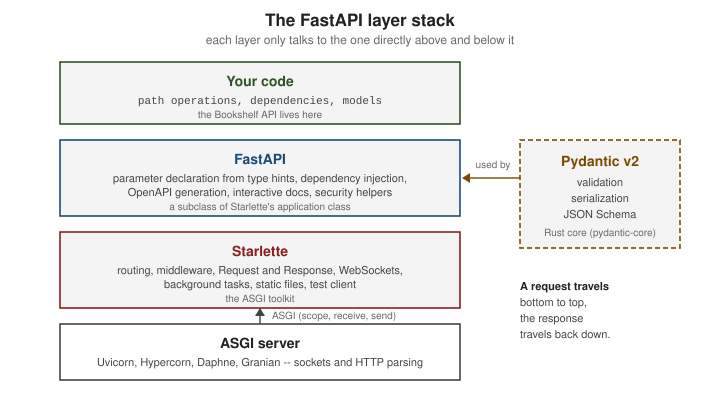

Introduction & Architecture
|
This content was generated with the assistance of AI and should be verified against the official documentation before being relied on in production. |
This page is written against FastAPI 0.142.2 (released 2026-09-30), Pydantic 2.13 and Starlette 1.7, checked on 2026-10-02. FastAPI supports Python 3.10 through 3.14; the examples in this section were executed on Python 3.13. It explains what FastAPI is built from and where it fits, before the rest of the section starts building the Bookshelf API — the small books/authors/reviews service used as the running scenario.
FastAPI = Starlette + Pydantic + OpenAPI
FastAPI is a thin, opinionated layer that combines three well-defined pieces:
-
Starlette — a lightweight ASGI toolkit. It provides the web parts: routing, middleware, the
RequestandResponseclasses, WebSockets, background tasks, static files and a test client. TheFastAPIclass is a subclass of Starlette’s application class, so every Starlette feature is available on a FastAPI app. -
Pydantic — the data-validation and serialization library. Every request parameter, request body and response model is a Pydantic type; Pydantic parses, validates, converts, serializes and produces the JSON Schema used in the documentation. FastAPI 0.142 requires Pydantic v2 (Pydantic v1 support was removed in the 0.12x series; see Pydantic v2 Essentials).
-
OpenAPI generation — from the same type declarations FastAPI builds an OpenAPI 3.1 document (JSON Schema 2020-12 compatible) served at
/openapi.json, and two interactive documentation UIs on top of it, Swagger UI at/docsand ReDoc at/redoc.
What FastAPI itself adds on top is mostly glue and conventions: declaring where each parameter comes from,
the dependency-injection system, security helpers (fastapi.security), and the OpenAPI document.

The snippet below shows all three ingredients in a handful of lines: the app is a Starlette application, the body is parsed and validated by Pydantic, and the OpenAPI version is generated.
from fastapi import FastAPI
from fastapi.testclient import TestClient
from pydantic import BaseModel
from starlette.applications import Starlette
app = FastAPI(title="Bookshelf API")
class Book(BaseModel):
title: str
year: int
@app.post("/books", response_model=Book, status_code=201)
async def create_book(book: Book) -> Book:
return book
assert issubclass(FastAPI, Starlette) # FastAPI *is* a Starlette application
client = TestClient(app)
assert client.post("/books", json={"title": "Dune", "year": 1965}).status_code == 201
r = client.post("/books", json={"title": "Dune", "year": "later"})
assert r.status_code == 422
print(r.json()["detail"][0]["type"], r.json()["detail"][0]["loc"])
print(client.get("/openapi.json").json()["openapi"])Source: FastAPI: Features
Running it prints int_parsing ['body', 'year'] (Pydantic’s error type and location for the invalid year) and
3.1.0, the OpenAPI version FastAPI emits.
ASGI vs WSGI, and ASGI Servers
WSGI (PEP 3333) is the classic Python web contract: a synchronous callable app(environ, start_response) that is
called once per request and returns the body. It maps naturally to one thread (or process) per in-flight request,
and has no way to express WebSockets or other long-lived connections. ASGI is its asynchronous successor: an
application is a coroutine app(scope, receive, send). The scope describes the connection (http,
websocket or lifespan), receive and send exchange events, so one event loop can multiplex many connections,
and WebSockets, server-sent events and application startup/shutdown (lifespan) all fit in the same contract.
from fastapi import FastAPI
from fastapi.testclient import TestClient
async def raw_asgi_app(scope, receive, send):
"""The ASGI contract: one coroutine, three arguments."""
assert scope["type"] == "http"
await send({"type": "http.response.start", "status": 200,
"headers": [(b"content-type", b"text/plain")]})
await send({"type": "http.response.body", "body": b"hello from raw ASGI"})
def wsgi_app(environ, start_response):
"""The WSGI contract: one blocking callable, called once per request."""
start_response("200 OK", [("Content-Type", "text/plain")])
return [b"hello from WSGI"]
app = FastAPI()
app.mount("/raw", raw_asgi_app)
client = TestClient(app)
print(client.get("/raw/").text)Source: ASGI specification
Because every ASGI framework speaks this contract, any ASGI server can run any ASGI application, and a FastAPI app can mount another ASGI application (here a bare one) side by side with its own routes. Flask or Django WSGI applications can be hosted inside a FastAPI app too, through a WSGI-to-ASGI adapter — see Sub-applications, WSGI & GraphQL.
An ASGI server is the process that owns the sockets, parses HTTP and calls your application. FastAPI works with any of them:
| Server | Notes |
|---|---|
The default for FastAPI: |
|
ASGI server that also supports HTTP/2 and HTTP/3 (QUIC) in addition to HTTP/1. |
|
The server developed for Django Channels; speaks HTTP and WebSockets. |
|
A server with a Rust HTTP core that can run ASGI, WSGI and its own RSGI interface. |
The FastAPI documentation itself only demonstrates Uvicorn (directly or through the fastapi CLI) and mentions
Hypercorn, Daphne and Granian by name as alternatives; the capabilities in the table come from each project’s own
description, so check them before choosing a server.
Main Features
-
Standards-based — OpenAPI 3.1 and JSON Schema; the schema is not a side artefact but a direct product of the code. Client generators, linters and contract-testing tools all consume
/openapi.json. -
Automatic interactive documentation — Swagger UI and ReDoc, with no extra annotations. The documentation is generated at startup, so it adds no per-request cost.
-
Editor support — because parameters are plain type hints, editors offer completion and type-checking for request data, and there is an official VS Code / Cursor extension (see Editor Support).
-
Validation and conversion — path, query, header, cookie and body data are converted to Python types and validated; invalid requests get a structured
422response without any handler code. -
Dependency injection — a small, explicit system based on
Depends, used for database sessions, settings, authentication and authorization. -
Sync and async —
defandasync defpath operations can be mixed freely; see Async & Concurrency. -
Security helpers — OAuth2, API keys and HTTP authentication classes that also register themselves in OpenAPI.
-
Starlette underneath — WebSockets, background tasks, lifespan, middleware, static files and test client.
REST Concepts in One Page
FastAPI does not force REST, but most APIs built with it are REST-style HTTP APIs, so the vocabulary is worth fixing up front (HTTP semantics are defined in RFC 9110).
-
Resources are the nouns of the API, identified by URLs:
/books,/books/42,/authors/7/books. -
CRUD maps to HTTP verbs: Create →
POSTon the collection; Read →GET; Update →PUT(replace) orPATCH(partial); Delete →DELETE. -
Status-code classes tell the client what happened:
2xxsuccess,3xxredirection,4xxclient error (invalid input, unauthenticated, forbidden, not found, conflict) and5xxserver error. -
Statelessness — each request carries everything the server needs (credentials, parameters); the server keeps no per-client session between requests. That is what lets you run many identical replicas behind a load balancer.
-
Safe and idempotent methods —
GETis safe (no side effects) andPUTandDELETEare idempotent (repeating them has the same effect as doing them once);POSTis neither.
The same ideas, in the Bookshelf API:
| Operation | Request | Success | Typical error |
|---|---|---|---|
Create a book |
|
|
|
Read a book |
|
|
|
Replace a book |
|
|
|
Delete a book |
|
|
|
from itertools import count
from fastapi import FastAPI, HTTPException
from fastapi.testclient import TestClient
from pydantic import BaseModel
app = FastAPI()
class BookIn(BaseModel):
title: str
class Book(BookIn):
id: int
books: dict[int, Book] = {}
ids = count(1)
@app.post("/books", status_code=201) # Create -> POST -> 201 Created
def create(book: BookIn) -> Book:
new = Book(id=next(ids), title=book.title)
books[new.id] = new
return new
@app.get("/books/{book_id}") # Read -> GET -> 200 / 404
def read(book_id: int) -> Book:
if book_id not in books:
raise HTTPException(status_code=404, detail="Book not found")
return books[book_id]
@app.put("/books/{book_id}") # Replace -> PUT -> 200 / 404
def replace(book_id: int, book: BookIn) -> Book:
if book_id not in books:
raise HTTPException(status_code=404, detail="Book not found")
books[book_id] = Book(id=book_id, title=book.title)
return books[book_id]
@app.delete("/books/{book_id}", status_code=204) # Delete -> DELETE -> 204
def delete(book_id: int) -> None:
books.pop(book_id, None)
c = TestClient(app)
assert c.post("/books", json={"title": "Dune"}).status_code == 201
assert c.get("/books/1").json() == {"title": "Dune", "id": 1}
assert c.put("/books/1", json={"title": "Dune Messiah"}).status_code == 200
assert c.delete("/books/1").status_code == 204
assert c.get("/books/1").status_code == 404
print("ok")Source: FastAPI: Response Status Code
The decorator’s status_code sets the success code, a return annotation (→ Book) becomes the response model, and
HTTPException maps a domain condition to a 4xx response. Each of these gets its own page later:
Status Codes & Error Handling.
One Request, Step by Step
The following sequence shows what happens between the socket and your function. Middleware wraps everything; FastAPI then resolves the route, builds the arguments (dependencies, path/query/header/cookie parameters and the body, all validated by Pydantic) and finally runs your function. The return value is validated and serialized against the response model and handed back through the middleware.
The next snippet records the order of events in a real app: a middleware, a dependency and a path function whose return value is filtered through a different response model.
from typing import Annotated
from fastapi import Depends, FastAPI, Request
from fastapi.testclient import TestClient
from pydantic import BaseModel
trace: list[str] = []
app = FastAPI()
@app.middleware("http")
async def log_request(request: Request, call_next):
trace.append("middleware: before")
response = await call_next(request)
trace.append("middleware: after")
return response
def get_settings() -> dict:
trace.append("dependency")
return {"page_size": 10}
class Book(BaseModel):
title: str
isbn: str = "hidden"
class BookPublic(BaseModel):
title: str
@app.post("/books", response_model=BookPublic)
def create(book: Book, settings: Annotated[dict, Depends(get_settings)]):
trace.append("path function")
return book
TestClient(app).post("/books", json={"title": "Dune"})
print(trace)Source: FastAPI: Middleware
It prints ['middleware: before', 'dependency', 'path function', 'middleware: after'], and the isbn field never
leaves the server because the response_model (BookPublic) drops it.
How FastAPI Compares
The official Alternatives, Inspiration and Comparisons page explains what FastAPI learned from Django REST Framework (automatic documentation UI), Flask (micro-framework, simple routing), Starlette and Uvicorn (the foundation), Pydantic (data) and several others. It does not compare against Litestar, Quart or AIOHTTP, so the table below is a short orientation drawn from each project’s own documentation rather than a ranking.
| Framework | Model | When it is the better fit than FastAPI |
|---|---|---|
Flask (see the site’s Python Flask section) |
Synchronous (WSGI) micro-framework with a large extension ecosystem; async views are supported but the framework is not async-first. |
Small apps and teams already fluent in Flask; you do not need generated OpenAPI or typed parameters (extensions exist for that). |
API toolkit on top of Django: ORM, admin, auth, serializers, viewsets. |
The data model is Django’s ORM, you want the admin and batteries-included conventions, and the API is part of a larger Django application. See the site’s Django section and its Django REST Framework page. |
|
ASGI framework with a typed, declarative API, built-in OpenAPI, dependency injection and data-transfer objects. |
You prefer its class-based controllers and built-in DTO and plugin system; it is the closest conceptual peer of FastAPI. |
|
Quart (see the Quart section of the Flask guide) |
The Flask API re-implemented on ASGI (async/await). |
Migrating a Flask code base to async while keeping the Flask programming model. |
Async HTTP client and server framework with its own request/response model (not ASGI-based by default). |
You need a combined HTTP client and server library, or fine-grained control over the HTTP layer. |
|
FastAPI |
ASGI, type-hint driven, Pydantic validation, generated OpenAPI 3.1, dependency injection. |
New async APIs where the type declarations should drive validation, serialization and documentation at once. |
The idea of declaring a REST API with typed handlers and generated OpenAPI exists in every mainstream stack. If you
come from the JVM or .NET, compare FastAPI with Spring Boot REST APIs,
Quarkus REST services and
ASP.NET Core Minimal APIs: path operations correspond to controller methods
or endpoint handlers, Pydantic models to DTO/record types with Bean Validation or data annotations, and Depends
to constructor injection.
Benchmarks: What the Numbers Mean
The official Benchmarks page notes that independent TechEmpower results place FastAPI under Uvicorn among the fastest Python frameworks, below Starlette and Uvicorn themselves. Read such numbers with care:
-
Tools at different layers appear in the same chart. Uvicorn (a server) is compared with Starlette (a toolkit) and FastAPI (a toolkit plus validation, serialization and documentation). The simpler the tool, the better it scores; compare servers with servers, microframeworks with microframeworks.
-
The usual benchmark workloads (plain-text or tiny JSON replies, simple queries) exercise little of what an application does. In a real service, database, network calls and your own logic dominate.
-
Validation and serialization cost something, but if you did not use FastAPI you would implement them yourself, usually with more code.
-
Async helps when requests spend most of their time waiting on I/O. It does not speed up CPU-bound work; see Async & Concurrency.
Measure your own application under a realistic load (a later page covers load testing).
A Short History and the 0.x Versioning Policy
FastAPI was created by Sebastián Ramírez (tiangolo) after a long evaluation of existing frameworks. In the official History, Design and Future page, the author describes studying the OpenAPI, JSON Schema and OAuth2 specifications first, designing the developer experience in the most popular Python editors, and building on Pydantic and Starlette (contributing to both) rather than writing everything from scratch. The design goal was one declaration per concept, with completion and type checks everywhere.
FastAPI is still a 0.x project, deliberately. The official About FastAPI versions page says that, following Semantic Versioning, any version below 1.0.0 may include breaking changes: PATCH releases (the last number) are bug fixes and non-breaking changes, while breaking changes and new features arrive in MINOR versions. The practical rules are:
-
Pin the FastAPI version (
fastapi[standard]>=0.142.2,<0.143.0, or an exact pin) and upgrade deliberately. -
Have tests before upgrading; the upgrade is "bump, run the tests, fix, pin again".
-
Do not pin Starlette; each FastAPI release declares the Starlette versions it supports.
-
Pydantic can be pinned to any v2 release that works for you.
Where Older Guides Are Outdated, and What Changed Recently
Material written for FastAPI around 2021-2023, including most books, shows the following that no longer match current practice:
-
Pydantic v1 syntax (
@validator,.dict(),class Config) — Pydantic v2 renames these (field_validator,model_dump(),model_config), and FastAPI dropped Pydantic v1 support in the 0.12x series (0.126.0 started the removal, 0.128.0 removedpydantic.v1support). -
Installing with
pip install fastapi uvicorn— since 0.112.0,fastapi[standard]installs the CLI, Uvicorn and the optional dependencies, andfastapi dev/fastapi run(0.111.0) replaced hand-writtenuvicorncommands. -
Plain default-value parameter declarations (
q: str = Query(None)) —Annotatedhas been recommended since 0.95.0. -
OpenAPI 3.0 output — since 0.99.0 FastAPI generates OpenAPI 3.1.
-
Startup and shutdown events — lifespan context managers (0.93.0) are the recommended mechanism.
The dated list of every change that matters is collected in What’s Changed & Migration.
Where to Go Next
Continue with Getting Started to install FastAPI and run the first app, then read Python Types & Annotated and Async & Concurrency. The section landing page, Python FastAPI, lists everything.